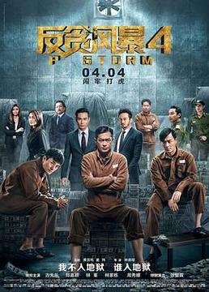

{kind=link}
简介：近年来，科学家们发现太阳急速衰老膨胀，短时间内包括地球在内的整个太阳系都将被太阳所吞没。为了自救，人类提出一个名为“流浪地球”的大胆计划，即倾全球之力在地球表面建造上万座发动机和转向发动机，推动地球离开太阳系，用2500年的时间奔往新家园——4.2光年外的比邻星简介：近年来，

简介：无力维权的修车工遭遇非法强拆后，选择跳楼自杀；随着小刑警孙大圣（王千源饰）调查的深入，发现这场看似简单的民事纠纷背后其实另有隐情；随着嫌疑目标的锁定，赵泰（包贝尔饰）和崔京民（王迅饰）为代表的反派集团被盯上后，公然藐视法律挑衅警察。面对反派集团金钱诱惑、顶头上司的警告劝阻、家人性命遭受威胁，警局小分队毫不退缩，一定要将犯罪分子绳之以法。

简介：在经历了一次个人悲剧后，他打算结束自己的生命，却被钢力士（斯特凡·卡皮西奇饰）和负音波（布里安娜·希尔德布兰饰）收留了，成为了一名受训中的X战警。韦德很快与罗素（朱利安·迪尼森饰）相识了，罗素是一个年轻的变种人，曾经受到过监护人的虐待。

简介：酷爱摩托车的柳青阳在一次赛车中救了陈一凡，两人因此结识。同时柳青阳家遭变故和母亲搬到工地居住，因为学业无成只能从体力劳动开始打工还债。陈一凡出手相救，把他招到明德房地产集团。在一心要照顾好母亲、还清债务责任心的驱使下，柳青阳努力学习、拼搏慢慢成长。

简介：督察尚垶原是警队明日之星，在一次行动中为救战友，不幸被匪徒一枪穿脑，经过抢救后奇迹生还，并且查案比以前更努力拼搏，赢得“铁探”的美誉。但尚垶饱受那次枪击的后遗症折磨，枪伤阴影、暴躁、甚至失禁。而总警司万晞华和Bingo之间神秘的关系，也让那次枪击的真相扑朔迷离。在警队的大升迁年，尚垶被迫卷入了警界高层权力相争的漩涡中。

简介：七月（马思纯 饰）与安生（周冬雨 饰）是从小一起长大的一对好闺蜜，七月温良柔和如同平静的海水，安生炽热叛逆仿似跃动的火焰，在命运的捉弄下，她们爱上了同一个男人家明，最终却因为价值观和生活方式的差异带来了截然不同的结局。
{kind=link}

{kind=link}
简介： 廉政公署收到报案人廖雨萍（周秀娜饰）的实名举报，正在坐牢的富二代曹元元（林峰饰）涉嫌行贿监狱里的监督沈济全（谭耀文饰）以及惩教员。首席调查主任陆志廉（古天乐饰）决定深入虎穴，卧底狱中。在监狱里，被陆志廉送入监狱的前警司黄文彬（林家栋饰）以及曹元元两大帮派势同水火，陆志廉趁机接近曹元元取得信任。同时监狱外的廉政公署总调查主任程德明（郑嘉颖饰）、国内反贪局行动处处长洪亮（丁海峰饰）也陆港联手，通力合作，最终成功破获贪腐行贿大案。

简介： 原湘琴喜欢上了天才少年江直树，在她表白失败准备放弃之际，爸爸居然带着自己搬进了直树家里。原湘琴不仅把直树视为心尖上的宝贝，还收集了关于他的各种周边。直树用过的东西、为直树定制的人形贴纸等等，湘琴都会细心收藏，甚至还会裱起来。面对很爱很爱的人，原湘琴用尽了全身的力气，傻的认真，也傻的可爱。直树并不是一个完美的人，他在湘琴面前会露出破绽，也因为湘琴的出现，打破他了原本的规则。两人之间的感情也不断升温。
{kind=link}

简介：《封神演义》由罗晋、王丽坤、张博、邓伦、邹兆龙、于和伟、胡静主演，该剧主要讲述了姜子牙、妲己、姜王后、申公豹之间斗争以及二郎神杨戬的成长史。

简介：元朝末年，武当弟子张翠山与天鹰教教主之女殷素素因卷入到屠龙刀的争夺之中，与金毛狮王谢逊一起漂流到海上荒岛。张翠山与殷素素二人结合生子，取名无忌。十年后，张翠山与妻子回归中土，却因与屠龙刀的瓜葛，双双被逼自刎，只留下孤儿张无忌。

简介：苏母的的突然离世打破了这个家庭外表的平静，意想不到的隐患层层显露，对毫无主见却又自私、小气的苏父的安置和后续生活问题，引发了远在国外的大哥与本城的二哥、小妹三家规律生活的不再。一直被苏母压制的苏父翻身突变，他的冷漠自私将苏家的旧伤痕撕成了一道道血淋淋的亲情鸿沟；大哥苏明哲一心愚孝，却不断伤害他在美国的小家庭的福祉，婚姻和事业几度面临危机；二哥苏明成是习惯啃老的宠儿，缺乏骑士精神，母亲的死让他突然面临心理断奶，茫然仓皇，导致事业崩溃，破产离婚。

简介： 修炼千年的白素贞在峨眉山化形成功，收到观音大士的点化，决定入红尘历练，行善积德早日登仙。白素贞在对抗恶妖的过程中，与“临安小华佗”许仙相识，又与五百年蛇妖小青结拜为姐妹。白素贞与许仙彼此钟情，结为夫妻。端午节白素贞误喝雄黄酒，显出原形吓死许仙、清醒过来的白素贞肝肠寸断，决定去昆仑山盗仙草让许仙还魂。经历了重重险阻，终于救活了许仙。白素贞身为妖类的消息传遍临安城，受到百姓的排斥。许仙为了保护白素贞吞下邪药万灵丹，化成妖形，被法海带入金山寺。

简介： 向真、钱贝贝、晋小妮、丁兰、于慧五个性格迥异的女孩相识于大学，志趣相投，结为闺蜜。毕业后，她们留在北京，立志奋斗。然而，年少激进的她们时常碰壁，考研失败、被传销组织骗、失业、失恋、做生意惨败、被父母勒令回老家、几个女孩的友情也经历了无数的纠葛和考验。面对这些问题，她们有过顽强坚持亦动过放弃的念头，但最后于慧勇敢站出对自己的错误负责，丁兰收获真爱，钱贝贝出国学习，向真更是经历磨难还能保留纯粹和热情继续生活。人生十字路口，她们探索寻觅，最终明白要通过自我斗争改变命运。
{kind=link}

简介：梦想成为珠宝设计师的高洁与盛丰金饰继承人于直浪漫邂逅。后来高洁进入盛丰与于直相爱，但是原本相爱的两人因为于直继母遗憾分手。而后继母收购盛丰。

简介： 遥远的高等生命星球上爆发一场内乱，导致守护各个星球的日月珏丢失、宇宙能量失衡。讲述了星球派遣的修正能量、寻找日月珏的使者赤语和地球人文素汐共渡三次能量裂变危机并最终相爱的故事。

简介： 曾经在赛车界叱咤风云，却因非法飙车被禁赛五年的赛车手张驰（沈腾饰）如今只能经营炒饭大排档。年近四十的他决定重返车坛挑战年轻一代的天才林臻东（黄景瑜饰），却遭遇重重障碍——没钱没车没队友，甚至驾照都得重新考。他找来曾经的搭档兼领航员孙宇强（尹正饰）和昔日车队技师记星（张本煜饰）帮忙，好不容易凑齐了装备准备参赛，领航员孙宇强却又出了事故 。

简介：耿浩（黄渤饰）与一心想发大财的好兄弟大飞（沈腾饰），经营着各自惨淡的“事业”，然而“天外来客”的意外降临，打破了二人平静又拮据的生活。神秘的西方力量也派出“哼哈二将”在全球搜查外星人行踪。啼笑皆非的跨物种对决，别开生面的“星战”，在中国某海边城市激情上演。
{kind=link}

简介：讲述无情、追命以及白晓茹前往灵花镇破“僵尸奇案”的故事。灵花镇在一夜间村民全都头顶长花，藤蔓缠身。原本幸福生机勃勃的小镇瞬间死寂沉沉，而且不断有人死去，为了江湖稳定，为了不再有人失去性命。无情、追命和白晓茹破除千难万险，悬崖血战异形变种。

简介：影片讲述了马三（宋晓峰饰）和艾美丽（关婷娜饰）是一对恰逢“七年之痒”的夫妻，两人联合身边人制造了一系列啼笑皆非的爱情考验，经过重重考验，马三终于懂得了，原来平淡日常相亲相爱的日子，才是老百姓最美好的生活。

简介：《白蛇：缘起》是由追光动画和华纳兄弟共同制作的动画电影，由黄家康、赵霁执导，张喆、杨天翔、唐小喜等配音，于2019年1月11日在中国内地上映。影片在中国民间传说“白蛇传”...

简介：2000年韩剧，系列电视剧《蓝色生死恋》之《秋天的童话》第一部，由宋慧乔、宋承宪、元斌领衔主演，尹锡湖执导。该剧几位主角间错位的命运，纠葛的感情，奠定了整部剧的悲情基调...

简介：绿皮书》是由彼得·法拉利执导，维果·莫特森、马赫沙拉·阿里主演的剧情片，于2018年9月11日在多伦多国际电影节首映；2019年3月1日在中国内地上映。该片改编自真人真事，

简介：司徒末（邢菲 饰）毕业在即，从小便习惯服从安排的她对前途迷茫懵懂，随波逐流地尝试各种安排，总是鼓不起勇气为自己做出选择。因新老校区并校，物理系的高材生顾未易（林一 饰）闯入司徒末的生活，平淡无奇的生活掀起了啼笑皆非的浪花。几次三番的交战让司徒末和顾未易这对欢喜冤家逐渐走进对方的心底，更是误打误撞地成为合租盟

简介： 一次意外溺水，长时间脑部缺氧让著名服装设计师厉薇薇失去了部分记忆，她的记忆停留在23岁。记忆中热恋的同为设计师的男友竟成了竞争对手，而一个陌生人却成了她的未婚夫。厉薇薇不相信自己会和前男友陈亦度分手，她努力调查前因。未婚夫霍骁为了保护薇薇，追回自己的未婚妻，千方百计阻挠薇薇调查，守在她周围。

简介：王茂与黄依然在洛芙婚庆公司是上下级关系，两人从相识的那一刻起就充满矛盾，由于两人的文化差异，使彼此都不能理解。

简介：身为三姐妹之长的白芍，在受老爸白守城管束三十年之后，终于迎来了把老爸“嫁“出去的好日子，然而白父却因对三个女儿不放心，不愿意与老伴儿张姨出国定居。为让老爸放心出国，以便自己获得自由，白芍与不打不相识的混血大男孩陆六安开始了假扮情侣的戏码。